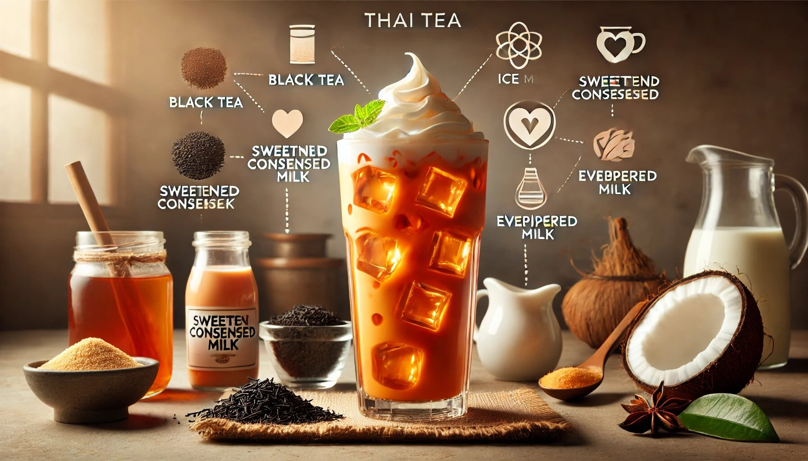

If you’ve ever tried Thai tea, you know it’s a magical concoction that combines rich, creamy flavors with a hint of sweetness and a burst of vibrant orange color. But did you know that this delicious drink is not just a treat for your taste buds but also has some surprising health benefits? Yes, Thai tea isn’t just a pretty face—it’s good for you too! In this article, we’ll explore why Thai tea is good for you, its benefits, and how you can make it at home. So, grab a cup of your favorite beverage (preferably Thai tea) and let’s dive in!
Before we get into the nitty-gritty of why Thai tea is good for you, let’s quickly cover what it actually is. Thai tea, also known as "cha yen" in Thailand, is a popular drink made from strongly brewed black tea, sweetened condensed milk, and often evaporated milk or coconut milk. It’s typically served over ice, making it a refreshing choice for hot days. The tea gets its signature orange color from food coloring or natural ingredients like turmeric or annatto seeds. It’s sweet, creamy, and utterly irresistible.
Now, let’s talk about the good stuff—why Thai tea is more than just a tasty drink. Here are some reasons why you might want to make it a regular part of your life (in moderation, of course!).
Thai tea is made from black tea, which is loaded with antioxidants. These little warriors help fight free radicals in your body, which can cause cell damage and lead to chronic diseases. Antioxidants are like the superheroes of your body, protecting you from harm and keeping you healthy.
Feeling sluggish? Thai tea can give you a gentle energy boost, thanks to the caffeine in black tea. Unlike coffee, which can sometimes make you jittery, the caffeine in Thai tea is balanced by the creamy milk, giving you a smoother pick-me-up. It’s the perfect drink to power through your afternoon slump.
Black tea, the base of Thai tea, has been linked to improved heart health. Studies suggest that regular consumption of black tea can help lower bad cholesterol (LDL) and improve blood vessel function. So, sipping on Thai tea might just be good for your ticker!
Thai tea can be a soothing drink for your stomach. Black tea contains tannins, which have anti-inflammatory properties that can help calm an upset stomach. Plus, the warmth of the tea (if you’re drinking it hot) can be comforting if you’re feeling a bit off.
Thanks to the addition of milk, Thai tea is a good source of calcium and vitamin D, which are essential for strong bones and teeth. If you use coconut milk, you’ll also get a dose of healthy fats that are great for your skin and overall health.
Let’s be honest—anything that tastes this good is bound to put a smile on your face. But beyond the flavor, the act of enjoying a cup of Thai tea can be a form of self-care. Taking a moment to relax and savor something delicious can do wonders for your mood.
Staying hydrated is important, but plain water can get boring. Thai tea is a fun and flavorful way to stay hydrated, especially when served over ice. Just remember to balance it with plenty of water throughout the day.
Now that you know why Thai tea is good for you, let’s talk about how you can make it at home. Don’t worry—it’s easier than you think! Here’s a simple recipe to get you started.
Taro milk tea is also a delightful and creamy drink that has won the hearts of bubble tea lovers everywhere! Made from the naturally sweet and nutty taro root, this vibrant purple drink is not only Instagram-worthy but also incredibly satisfying. Its smooth, velvety texture pairs perfectly with chewy boba pearls, making every sip a fun and flavorful experience. Plus, taro is packed with nutrients, so you can feel a little less guilty about indulging in this treat. Whether you're a bubble tea newbie or a seasoned pro, taro milk tea is a must-try that’s sure to brighten your day—and your taste buds!
Thai tea is more than just a delicious drink—it’s a delightful experience that comes with a host of health benefits. From its antioxidant-rich black tea base to its creamy, mood-boosting goodness, Thai tea is a treat you can feel good about enjoying. Plus, making it at home is easy and allows you to customize it to your taste.
So, the next time you’re craving something sweet, creamy, and refreshing, why not whip up a batch of Thai tea? Your taste buds (and your body) will thank you. Cheers to good health and great flavor!